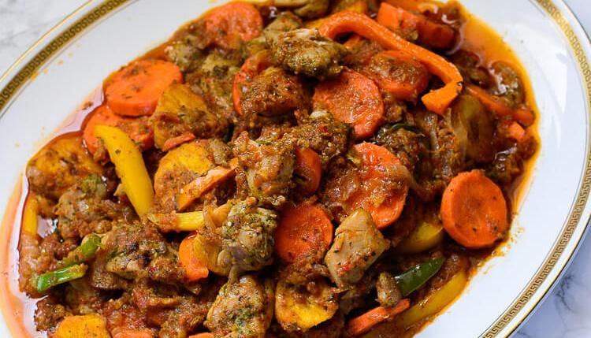
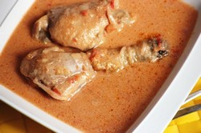
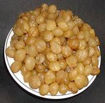
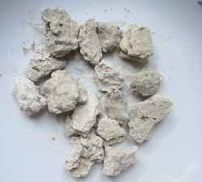
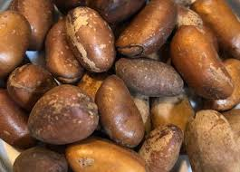
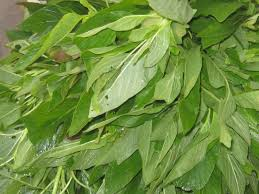
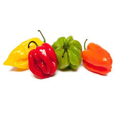
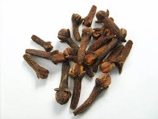
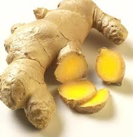
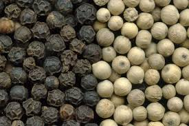

Les plats classiques
-
Le poulet DG, poulet frit avec des plantains et des épicés
Le poulet DG est un plat camerounais. C'est un ragoût de poulet (frit) servi avec un cocktail de frites de plantains, de légumes (carottes, poivrons, haricots verts ...) et de divers aromates (herbes, cube...). C'est une recette simple, ne demandant que peu d'ingrédients exotiques. Source
-
Le poisson braisé (maquereau, bar, sole)

Le poisson est mariné dans une sauce épicée pour quelques temps et est ensuite cuit aux braises, au barbecue ou dans un plat allant au four. Source
-
la sauce d'arachide
La sauce d’arachide est l’un des plats universel d’Afrique « noire » on le retrouve sous différentes selon la langue du pays. « Moambe » au Congo, « nfiang owondo » au Cameroun, « Mafé » au Mali. Elle peut être cuisinée avec de la volaille, du poisson frais ou fumé, des légumes ou de la viande. Au Cameroun et particulièrement chez les Béti « Nfiang » veut dire sauce et « Owondo » arachide. Source
Les ingredients les plus utilisés
-
Le djansang
Le djansang est une graine ronde et blonde très présente dans la cuisine africaine. Son goût est très prononcée et elle est écrasée avant d’être intégrée aux préparations à chaud. Elles nous permettent d’épaissir nos préparations : soupes, bouillons de poissons. source
-
le sel gemme
C'est un minéral qui est également appelé halite. Il est utilisé pour cuisiner ou conserver des aliments. source
-
le pèbè
c'est une épice, une graine à coque cachée dans le fruit d'un arbre séculaire d'Afrique centrale.Sa saveur est à la fois acidulée et piquante. C'est une épice discrète, mais elle a du caractère ! C'est l'une des épices qui composent le mélange mbongo et c'est - avec le djansan - une alliée incontournable des grillades au Cameroun source
-
le basilic
Très utilisé dans la gastronomie camerounaise en général, et chez les Betis en particulier, le messep ou basilic tropical est très prisé dans la cuisson des bouillons de viandes, des sauces (arachide, mangue sauvage).La saveur de la chair de poisson, de viande, de poulet ou de gibier, est rehaussée par le messep. source
-
le piment
En Afrique, rare sont les mets qui ne sont pas accompagnés ou fait à base de piment. Les africains sont des férus du piment. c’est un fruit au goût plus ou moins piquant, dû à la présence d’une substance, la capsaicine. source
-
le clou de girofle
bouton floral d’un arbre asiatique au goût à la fois piquant et doux, il a des propriétés apéritives et carminatives, c’est-à-dire qu’il élimine les gaz intestinaux. il permet de conserver les graines comme le haricot, le maïs et les protègent de moisissure productrice de substances cancérigènes. A forte dose, il est irritant pour le tube digestif. source
-
Gingimbre
son rhizome a une saveur douce et intensément aromatique. Ainsi, elle s’emploie dans divers plats, dans les fruits en conserve. A forte dose il produit des gastrites et est déconseillé en cas d’ulcère gastroduodénal. source
-
Poivre
ce sont les fruits secs avec une coquille (poivre noir) ou sans coquille (poivre blanc) d’un arbre originaire de l’Inde cultivé actuellement au Cameroun. Son goût intense est dû à une substance,la pipéridine. Le poivre facilite la digestion des repas lourds et riches en protéines et graisses. source